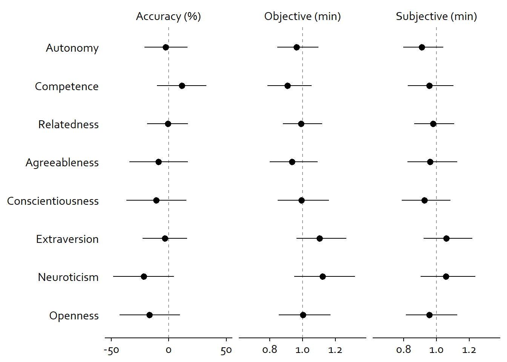
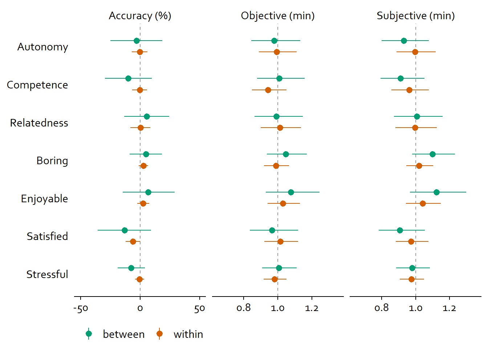
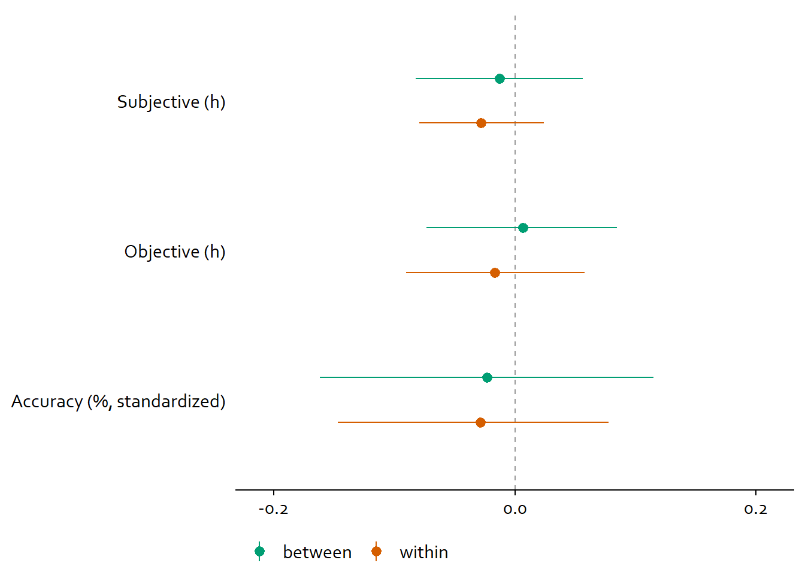

5 Synthesis
Alright, here I visualize the findings from the analysis section. I’ll create a summary figure for each of the three blocks.
For that, I’ll extract the model estimates of the effects from each model first.
model1 <- read_rds(here("models", "model1.rds"))
model2 <- read_rds(here("models", "model2.rds"))
model3 <- readRDS(here("models", "model3.rds"))
model4 <- read_rds(here("models", "model4.rds"))
model5 <- read_rds(here("models", "model5.rds"))
model6 <- readRDS(here("models", "model6.rds"))
model7 <- readRDS(here("models", "model7.rds"))
model8 <- read_rds(here("models", "model8.rds"))
model9 <- read_rds(here("models", "model9.rds"))First we get all estimates.
estimates <-
tibble(
block = as.character(),
model = as.character(),
predictor = as.character(),
estimate = as.double(),
ci_low = as.double(),
ci_high = as.double(),
outcome = as.character()
)
models <-
paste0(
"model",
1:9
)
for (model in models) {
m <- get(model)
dat <-
fixef(m) %>% # get fixed effects
as_tibble(., rownames = "predictor") %>% # turn to tibble and save predictor variable
filter(predictor != "Intercept") %>% # remove intercept
select(-Est.Error) %>% # drop variable
mutate( # add the outcome by turning formula into character and selecting the first section
outcome = as.character(m$formula)[1] %>%
str_replace(., "\n", "") %>% # remove line breaks
str_remove(., "\\ (.*)") # select the outcome name
) %>%
rename(
estimate = Estimate,
ci_low = `Q2.5`,
ci_high = `Q97.5`
) %>%
mutate(
model = model, # original name
# block of the RQ
block = case_when(
parse_number(model) %in% 1:3 ~ "Personality on smartphone use",
parse_number(model) %in% 4:6 ~ "Experiences on smartphone use",
parse_number(model)%in% 7:9 ~ "Smartphone use on well-being"
)
)
# bind them all into a tibble
estimates <-
bind_rows(
estimates,
dat
)
}Next, let’s make some cosmetic changes.
estimates <-
estimates %>%
# get odds for estimates of the gamma models
mutate(
across(
estimate:ci_high,
~ case_when(
str_detect(outcome, "social_media") ~ exp(.x),
TRUE ~ .x
)
)
) %>%
# create variable that indicates within or between for models on the state level and whether predictors are state or trait
mutate(
between_within = case_when(
str_detect(predictor, "between") ~ "between",
str_detect(predictor, "within") ~ "within",
TRUE ~ NA_character_
),
trait_state = case_when(
block != "Personality on smartphone use" ~ "state",
TRUE ~ "trait"
)
) %>%
# clean up level names
mutate(
across(
c(predictor, outcome),
~ case_when(
str_detect(.x, "objective") ~ "Objective",
str_detect(.x, "subjective") ~ "Subjective",
str_detect(.x, "_c$|between|within") ~ str_to_title(str_remove(.x, "_.*")),
str_detect(.x, "well") ~ "Well-being",
TRUE ~ str_to_title(.x)
)
)
) %>%
# give a value for the line that signifies no effect
mutate(
line = if_else(outcome %in% c("Objective", "Subjective"), 1, 0)
)5.1 Personality on smartphone use (trait)
Okay, next I create the first summary figure. We see that none of the trait underlying true trait relations (conditional on our model) exclude zero. Neuroticism and openness might be related to less error in estimating smartphone use, but even their credible interval includes zero.
# function for breaks
my_breaks <-
function(x) {
if (max(x) > 5){
c(-50, 0, 50)
} else {
c(0.8, 1, 1.2)
}
}
# function for limits
my_limits <-
function(x) {
if (max(x) > 5){
c(-50, 50)
} else {
c(0.65, 1.35)
}
}
# plot
ggplot(
estimates %>%
filter(block == "Personality on smartphone use") %>%
mutate(
outcome = as.factor(outcome),
outcome = fct_recode(
outcome,
"Objective (min)" = "Objective",
"Subjective (min)" = "Subjective",
"Accuracy (%)" = "Error"
),
# reorder predictors
predictor = as.factor(predictor),
predictor = fct_rev(fct_relevel(
predictor,
"Autonomy",
"Competence",
"Relatedness",
"Agreeableness",
"Conscientiousness",
"Extraversion",
"Neuroticism",
"Openness"
)
)),
aes(
x = estimate,
y = predictor
)
) +
geom_vline(
aes(
xintercept = line
),
color = "#999999",
linetype = "dashed"
) +
geom_pointrange(
aes(
xmin = ci_low,
xmax = ci_high
)#,
# position = position_dodge2(.6, reverse = TRUE)
) +
facet_wrap(
~ outcome,
scales = "free_x"
) +
scale_x_continuous(breaks = my_breaks, limits = my_limits) +
theme(
axis.title.y = element_blank(),
axis.title.x = element_blank(),
axis.ticks.y = element_blank(),
axis.line.y = element_blank(),
strip.background.x = element_blank(),
strip.background.y = element_blank(),
text = element_text(family = "Corbel")
) -> figure4
figure4
ggsave(
here("figures", "figure4.tiff"),
plot = figure4,
width = 21 * 0.8,
height = 29.7 * 0.4,
units = "cm",
dpi = 300
)5.2 Experiences on smartphone use (state)
I’ll move on to the next block investigating state relations between experiences and smartphone use.
ggplot(
estimates %>%
filter(block == "Experiences on smartphone use") %>%
mutate(
outcome = as.factor(outcome),
outcome = fct_recode(
outcome,
"Objective (min)" = "Objective",
"Subjective (min)" = "Subjective",
"Accuracy (%)" = "Error"
)
),
aes(
x = estimate,
y = predictor,
color = between_within
)
) +
geom_vline(
aes(
xintercept = line
),
color = "#999999",
linetype = "dashed"
) +
geom_pointrange(
aes(
xmin = ci_low,
xmax = ci_high
),
position = position_dodge2(.6, reverse = TRUE)
) +
facet_wrap(
~ outcome,
scales = "free_x"
) +
scale_x_continuous(breaks = my_breaks, limits = my_limits) +
scale_color_manual(values = c("#009E73", "#D55E00")) +
scale_fill_manual(values = c("#009E73", "#D55E00")) +
theme(
axis.title.y = element_blank(),
axis.title.x = element_blank(),
axis.ticks.y = element_blank(),
axis.line.y = element_blank(),
strip.background.x = element_blank(),
strip.background.y = element_blank(),
legend.title = element_blank(),
legend.position = "bottom",
text = element_text(family = "Corbel")
) -> figure5
figure5
ggsave(
here("figures", "figure5.tiff"),
plot = figure5,
width = 21 * 0.8,
height = 29.7 * 0.4,
units = "cm",
dpi = 300
)5.3 Smartphone use on well-being (state)
I’ll move on to the next block investigating state relations between smartphone use and well-being.
ggplot(
estimates %>%
filter(block == "Smartphone use on well-being") %>%
mutate(
predictor = as.factor(predictor),
predictor = fct_recode(
predictor,
"Objective (h)" = "Objective",
"Subjective (h)" = "Subjective",
"Accuracy (%, standardized)" = "Error"
)
),
aes(
x = estimate,
y = predictor,
color = between_within
)
) +
geom_vline(
aes(
xintercept = line
),
color = "#999999",
linetype = "dashed"
) +
geom_pointrange(
aes(
xmin = ci_low,
xmax = ci_high
),
position = position_dodge2(.6, reverse = TRUE)
) +
scale_x_continuous(breaks = c(-0.2, 0, 0.2), limits = c(-0.21, 0.21)) +
scale_color_manual(values = c("#009E73", "#D55E00")) +
scale_fill_manual(values = c("#009E73", "#D55E00")) +
theme(
axis.title.y = element_blank(),
axis.title.x = element_blank(),
axis.ticks.y = element_blank(),
axis.line.y = element_blank(),
strip.background.x = element_blank(),
strip.background.y = element_blank(),
legend.title = element_blank(),
legend.position = "bottom",
text = element_text(family = "Corbel")
) -> figure6
figure6
ggsave(
here("figures", "figure6.tiff"),
plot = figure6,
width = 21 * 0.8,
height = 29.7 * 0.4,
units = "cm",
dpi = 300
)